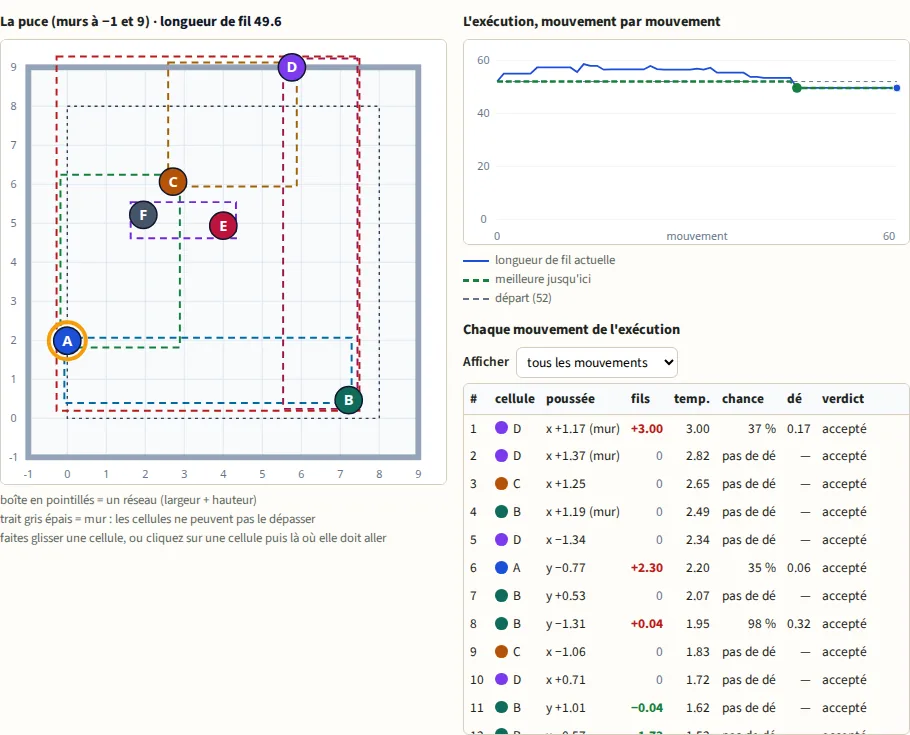

Lab 07 · Placement global
Placement par recuit simulé
Six cellules sont posées sur une petite puce, reliées par six réseaux. Le recuit simulé les déplace au hasard, et garde un mouvement pire quand un dé dit oui, de moins en moins souvent à mesure que la puce refroidit. Ce lab raconte une exécution mouvement par mouvement, puis vous laisse la lancer, faire glisser les cellules vous-même et compter les mouvements.
Lab interactif

Lancez-le et jouez avec, directement dans le navigateur :
- Appuyez sur Appliquer le préréglage : la graine 42 avec 60 mouvements donne 49.6, avec 44 mouvements acceptés et 16 refusés, l'exécution des leçons.
- Lisez l'exécution mouvement par mouvement : une courbe de la longueur de fil, et un journal avec la poussée, la chance, le dé et le verdict de chaque mouvement.
- Faites glisser les cellules vous-même, ou choisissez-en une et utilisez les flèches, et regardez changer les six boîtes de réseau et le total.
- Lancez n'importe quelle graine avec n'importe quel nombre de mouvements, et passez du meilleur placement au dernier.
Neuf défis, de l'initiation à l'approfondissement, vérifient ce que vous avez construit ou compté, pas le bouton sur lequel vous avez cliqué. Le recuit part toujours du placement de départ, et déplacer une cellule après une exécution annule les nombres de cette exécution.
Implémentation (parcours A)
Écrivez vous-même mulberry32, total_hpwl et sa_place, à partir des règles écrites, et vérifiez-les avec les résultats de référence. Les commandes ci-dessous se lancent dans le dépôt du cours, depuis courses/learn_placement/module02-07-sa-placement/.
tiny_place.jsonLes six cellules, les six réseaux et le placement de départ (52)
sa_place_check.pyVérificateur ; --impl contrôle votre code, --vs-node compare avec JavaScript
sa_node.mjsLe même recuit en JavaScript (utilisé par --vs-node)
trace_seed42_60.jsonGraine 42, 60 mouvements, tous les mouvements : l'exécution des leçons
trace_seed199_60.jsonGraine 199 : finit pire que le départ
trace_seed162_60.jsonGraine 162 : une bonne exécution gâchée par son dernier mouvement
trace_seed42_300.jsonGraine 42, 300 mouvements : 2.6 et un tas de cellules
seeds_1_200.jsonGraines 1 à 200 : meilleur, dernier, acceptés, refusés
Exemples — placement par recuit simulé
Parcours A (implémentation). L'instance est examples/tiny_place.json (six cellules A à F, six réseaux), le corrigé est
examples/sa_place_check.py, et les exécutions sont dans examples/trace_*.json et examples/seeds_1_200.json.
Chaque nombre ci-dessous a été imprimé par ce vérificateur (python3 examples/sa_place_check.py --show, --json).
Lancez-le depuis le dossier de ce module ; il n'a besoin que de la bibliothèque standard de Python (--vs-node demande aussi node).
Objectif
Déplacer les cellules par petits sauts, et garder le saut quand les fils raccourcissent, ou, parfois, quand ils s'allongent. Cette seconde partie est toute l'idée du recuit simulé : une méthode qui ne fait que descendre reste coincée, une méthode qui monte parfois (de moins en moins souvent à mesure que la température T baisse) peut s'en sortir. Le coût est le HPWL, et la réponse est le meilleur placement vu, pas le dernier.
Définitions
- Cellule : un point
(x, y)avec un nom. Six cellules, A à F, toujours listées dans cet ordre. - Réseau : la liste des cellules qu'un fil relie. Réseaux : A–B, C–D, A–C, B–D, A–B–C–D (4 broches), E–F.
- HPWL d'un réseau = (plus grand x − plus petit x) + (plus grand y − plus petit y) de ses cellules. Coût = la somme sur les six
réseaux, chaque réseau compté une fois avec le poids 1. Les poids de
tiny_place.json(le réseau 4 compte 5) servent au lab de timing et ne sont pas utilisés ici. Placement de départ : A (0,0) B (8,0) C (0,8) D (8,8) E (4,4) F (0,4) donne 52. - Mouvement : choisir une cellule, un axe et un sens, la faire sauter de 0.5 à 1.5 (pas un entier), ramener le résultat dans les murs
−1…9. Δ (écrit
dHpwldans les fichiers) = HPWL après − HPWL avant. - Température T : commence à 3 et est multipliée par 0.94 après chaque mouvement, accepté ou non. Après 60 mouvements, elle vaut 0.0732.
- Accepté / refusé : un mouvement qui reste / un mouvement qu'on annule. Accepté n'est pas un progrès : sur les 44 mouvements acceptés de la graine 42, 11 ont raccourci les fils, 9 les ont allongés et 24 n'ont rien changé (mouvements neutres, Δ = 0 : la cellule a bougé, aucune boîte de réseau n'a changé).
- Meilleur / dernier : le plus bas HPWL vu à un moment quelconque (et ses positions) / le HPWL du dernier placement. La fonction rend le meilleur.
- Graine : un entier qui fixe toute l'exécution. Une graine, c'est une histoire.
API (ce que cherche --impl)
positions est {cellule: {"x": .., "y": ..}}, cells une liste de noms dans l'ordre, nets une liste de listes de noms.
def mulberry32(seed): # -> rand(): the next float in [0, 1)
def total_hpwl(nets, positions): # -> float
def sa_place(positions, cells, nets, *, moves=60, t0=3.0, cool=0.94, step=1.0, seed=42):
# -> {"positions": BEST positions, "hpwl": BEST hpwl, "accepted": int, "rejected": int, "final_hpwl": float}
Mêmes signatures que common/solvers.py, pour comparer votre fonction avec celle du cours. Les fonctions que vous n'avez pas
encore écrites sont signalées SKIP. Ne modifiez jamais les positions, cells ou nets qu'on vous donne.
Les règles (écrites exactement ; le code du cours ne les avait jamais écrites)
- Nombres aléatoires :
mulberry32(seed), le petit générateur deplacement-core.js, sans tirage d'échauffement : le premier appel rend le premier nombre. La graine 42 donne 0.6011, 0.4483, 0.8525, 0.6697, 0.1748. Évitez les graines 0 et 1 dans vos propres tests : le deuxième nombre de la graine 1 est 0.0027, donc le premier axe est toujours x. - Un mouvement utilise quatre nombres, dans cet ordre :
r1choisit la cellulecells[floor(r1 * 6)](uniforme, selon l'ordre de la liste) ;r2 < 0.5veut dire axe x, sinon y ;r3 < 0.5veut dire moins, sinon plus ;r4donne la taille1.0 * (0.5 + r4). La nouvelle coordonnée est ramenée dans −1…9 (les deux coordonnées de cette cellule). - Test : si Δ ≤ 0, le mouvement est accepté et aucun nombre aléatoire n'est tiré. Sinon, tirez
u(le cinquième nombre) et acceptez quandu < e^(−Δ / T). - Comptabilité : si accepté,
cur = HPWL après; sicur < beststrictement,bestet les meilleures positions sont mis à jour. PuisT = T * 0.94, toujours. - Résultat : meilleures positions, meilleur HPWL, acceptés, refusés (et le HPWL final).
- Nombre de tirages pour la graine 42 : 4 × 60 + 25 (un par proposition qui aggrave) = 265.
- L'ordre des cellules fait partie de la spécification : la même graine avec les cellules listées F…A est une autre exécution (40.7859).
- Toutes les cellules bougent, les plots aussi.
tiny_place.jsonappelle A et D des « plots fixes », mais ce recuit ne les fige jamais (figer les plots est la règle des labs analytiques). Pour la graine 42, 20 des 60 propositions portaient sur A ou D et 17 ont été acceptées.
Pseudo-code (il remplace l'ancienne ligne ΔHPWL<0 du lab : avec <, le même code donne 35.39, pas 49.58) :
INPUT: start positions, cells in order, nets, seed, moves=60, T=3, cool=0.94
cur = HPWL(start); best = cur; best_pos = start
for move in 1..moves:
cell = cells[floor(r1 * n)]; axis = x if r2 < 0.5 else y; sign = -1 if r3 < 0.5 else +1
new = old + sign * (0.5 + r4); clamp the cell's x and y to [-1, 9]
delta = HPWL(after) - cur
if delta <= 0: accept # not worse: no dice
else: u = next number; accept if u < exp(-delta / T)
if accepted: cur = HPWL(after); if cur < best: best = cur; best_pos = positions
T = T * cool
OUTPUT: best_pos, best, accepted, rejected
GOLDEN seed=42, 60 moves -> best 49.5755 at move 45, final 49.5755, accepted 44, rejected 16
La probabilité d'accepter un mouvement pire, e^(−Δ / T)
| Δ \ T | 3.0000 (départ) | 1.6158 (mouvement 10) | 0.4688 (mouvement 30) | 0.0732 (fin) |
|---|---|---|---|---|
| 0.0 | 1.0000 | 1.0000 | 1.0000 | 1.0000 |
| 0.5 | 0.8465 | 0.7339 | 0.3442 | 0.0011 |
| 1.0 | 0.7165 | 0.5386 | 0.1185 | 0.0000 |
| 3.0 | 0.3679 | 0.1562 | 0.0017 | 0.0000 |
| 6.0 | 0.1353 | 0.0244 | 0.0000 | 0.0000 |
Mêmes fils, même Δ : audacieux au début, prudent à la fin. Le premier mouvement de la graine 42 est la cellule avec Δ = 3, T = 3.
Référence 1 — graine 42, 60 mouvements (l'exécution du lab dans le navigateur)
Mouvement 1 à la main : r1 = 0.6011 → cellule D ; r2 = 0.4483 → axe x ; r3 = 0.8525 → plus ; r4 = 0.6697 → taille 1.1697.
D passe de x = 8 à 9.1697, le mur l'arrête à x = 9. Les réseaux C–D, B–D et A–B–C–D deviennent chacun plus larges de 1 : Δ = +3
(HPWL 52 → 55). p = e^(−3/3) = 0.3679 ; le tirage u = 0.1748 est en dessous : accepté.
| Grandeur | Valeur | Pourquoi c'est important |
|---|---|---|
| HPWL de départ | 52 | A, B, C, D dans les quatre coins |
| meilleur HPWL | 49.5755 (le lab affiche 49.6) | la valeur exacte ; le lab arrondit à une décimale |
| meilleur atteint au | mouvement 45 (B y −0.794 → 0.467, Δ = −3.782) | et jamais battu après |
| HPWL final | 49.5755 = meilleur | pour cette graine seulement ; voir la référence 2 |
| acceptés / refusés | 44 / 16 | des entiers exacts, pas « environ » |
| sur les 44 acceptés | 11 meilleurs, 9 pires, 24 neutres | accepté n'est pas un progrès |
| sur les 60 propositions | 11 meilleures, 25 pires, 24 neutres | les 16 refusées sont toutes parmi les 25 pires |
| mouvements arrêtés par un mur | 10 (5 acceptés : mouvements 1, 2, 4, 13, 50 ; 5 refusés : 20, 22, 27, 37, 60) | la limite fait partie de la spécification : sans elle, 42.4127 |
| HPWL le plus haut pendant l'exécution | 58.5768 (mouvement 13) | l'exécution monte d'abord depuis 52, puis descend |
| (HPWL, T) aux mouvements 0, 10…60 | (52, 3) (57.35, 1.616) (56.59, 0.870) (56.87, 0.469) (53.36, 0.252) (49.58, 0.136) (49.58, 0.073) | history de saPlace (le lab trace chaque mouvement) |
| nombres tirés | 265 = 4 × 60 + 25 | un portage qui tire quand Δ = 0 dérive |
| propositions sur les plots A, D | 20, dont 17 acceptées | A finit en (0, 1.99), D en (5.76, 9) |
| meilleures positions | A (0, 1.9895) B (7.2157, 0.4666) C (2.7113, 6.0676) D (5.7591, 9) E (4, 4.9394) F (1.9499, 5.2174) | ce que rend la fonction |
Quelques mouvements à lire dans --show : le mouvement 15 (A va en x = −0.98, Δ = 2.945, p = 0.097, u = 0.612 : refusé) ;
le mouvement 17 (Δ = 0.082, p = 0.929 : une aggravation anodine acceptée) ; le mouvement 43 (Δ = 4.453, T = 0.223, p = 0.0000 : refusé).
Référence 2 — le meilleur n'est pas le dernier (graines 199 et 162)
| Graine | Meilleur | Atteint au | Dernier | Acceptés / refusés | HPWL max | Ce que ça montre |
|---|---|---|---|---|---|---|
| 42 | 49.5755 | mouvement 45 | 49.5755 | 44 / 16 | 58.58 | les deux sont égaux par hasard |
| 199 | 52.0000 = le départ | jamais | 53.8714 | 37 / 23 | 60.46 | 37 mouvements acceptés, aucun ne bat le départ ; le dernier est pire que le départ ; la fonction doit rendre le départ |
| 162 | 27.7525 | mouvement 59 | 27.8871 | 41 / 19 | 55.19 | une bonne exécution gâchée par son dernier mouvement (E y +0.82, Δ = +0.135, p = 0.178, u = 0.091) |
Sur les graines 1…200, le HPWL final est pire que le meilleur pour 9 graines : 6, 13, 54, 102, 118, 149, 156, 162 et 199.
Référence 3 — une graine, une histoire (graines 1…200, 60 mouvements chacune)
| Grandeur | Valeur |
|---|---|
| meilleur HPWL, le plus bas | 13.7292 (graine 134) |
| meilleur HPWL, le plus haut | 52.0000 (graine 199) |
| médiane des 200 meilleures valeurs | 36.0428 |
| cinq meilleures graines | 134 : 13.7292, 114 : 15.0626, 75 : 15.5504, 84 : 20.1749, 60 : 20.6920 |
| graines qui battent la graine 42 | 197 sur 200 (seules les graines 62 : 49.9431 et 199 : 52.0000 sont pires) |
| graines qui ne battent jamais le départ | 1 (graine 199) |
La graine 42 est la troisième plus mauvaise des 200 exécutions. C'est l'histoire reproductible utilisée partout dans ce lab ; pour juger une
méthode aléatoire, regardez beaucoup d'exécutions. Le tableau par graine est examples/seeds_1_200.json.
Référence 4 — ce que le coût ne sait pas (300 et 1000 mouvements)
| Exécution | Meilleur HPWL | Acceptés / refusés | Débordement des cases 2×2 |
|---|---|---|---|
| départ | 52 | – | 2 |
placement « référence compact » de tiny_place.json |
14 | – | 2 |
| SA graine 42, 60 mouvements | 49.5755 | 44 / 16 | 2 |
| SA graine 42, 300 mouvements (meilleur au mouvement 278) | 2.6119 | 104 / 196 | 4 |
| SA graine 42, 1000 mouvements | 2.3814 | 107 / 893 | – |
| les six cellules sur un seul point (4, 4) | 0 | – | 5 |
le placement overlap de tiny_place.json |
24 | – | 3 |
Le HPWL n'a pas de règle de chevauchement : l'exécution de 300 mouvements finit très en dessous de la « référence 14 », donc 14 n'est pas un plancher, et avec A, B, C, D à moins de 0.5 les uns des autres, ses cases sont plus chargées qu'au départ. Le HPWL seul adore empiler les cellules ; le lab sur la densité corrige cela. (Cases : 2×2 sur 0…8, capacité 1 cellule par case ; débordement = les cellules au-dessus de la capacité.)
Pièges — un portage qui casse une règle écrite (graine 42, 60 mouvements)
| Portage | Meilleur | Acceptés / refusés | Nombres tirés | Détecté par la référence ? |
|---|---|---|---|---|
| les règles ci-dessus | 49.5755 | 44 / 16 | 265 | – |
| accepter seulement quand Δ < 0 (l'ancien pseudo-code), tirer sinon | 35.3928 | 46 / 14 | 282 | oui |
tirer u à chaque mouvement, même quand Δ ≤ 0 |
35.7737 | 41 / 19 | 300 | oui |
| pas de murs à −1…9 | 42.4127 | 39 / 21 | 266 | oui |
| pas entier 1 au lieu de 0.5…1.5 | 39.0000 | 34 / 26 | 208 | oui |
| refroidir T avant le test | 49.5755 | 44 / 16 | 265 | non : même exécution ici, donc l'ordre du refroidissement n'est pas contrôlé |
| cellules listées F…A | 40.7859 | 39 / 21 | – | oui |
| réseaux inversés, ou dictionnaire des positions dans un autre ordre de clés | 49.5755 | 44 / 16 | 265 | même exécution : permis |
Tous ces portages ont l'air fidèles et sont tous des programmes différents. C'est pourquoi les règles sont écrites.
Exploration (PAS une référence) : --freeze A,D
python3 examples/sa_place_check.py --show --freeze A,D garde les plots où ils sont. La cellule qui bouge est choisie parmi les cellules non
figées seulement, dans l'ordre A…F : cell = free[floor(r1 * n_free)] avec free = [B, C, E, F]. Même graine, 60 mouvements :
meilleur 51.0964 (mouvement 59), 45 acceptés / 15 refusés. C'est une expérience, pas un nombre sur lequel le lab ou le quiz s'appuie.
Fichiers d'exécution pour les leçons animées (--json)
python3 examples/sa_place_check.py --json --seed 42 --moves 60 imprime une exécution ; --write-examples réécrit les fichiers
examples/trace_seed42_60.json, trace_seed199_60.json, trace_seed162_60.json, trace_seed42_300.json et
seeds_1_200.json. --vs-node les régénère avec le JavaScript du lab dans le navigateur et compare.
En-tête : seed, moves, t0, cool, step, frozen, cells (in order), nets, walls {min -1, max 9}, hpwl_start, net_hpwl_start (one
value per net, in the order of nets), start, best, best_move (null when the run never beat the start), final,
best_positions, final_positions, accepted, rejected, draws, accepted_by_kind, proposed_by_kind, clamped, peak, history.
moves_list a un objet par mouvement : move (à partir de 1), cell, axis, from et to (la position de la cellule avant et après
la limite ; pour un mouvement refusé, to est la position essayée), proposed (la coordonnée avant la limite), clamped,
delta (le saut signé), dHpwl (le changement de coût, Δ), T (avant le refroidissement), p (probabilité d'acceptation, 1 quand Δ ≤ 0), u
(null quand aucun nombre n'a été tiré), accepted, newBest, hpwl (actuel), best, et kind (better, worse ou free,
d'après le signe de Δ). Les flottants sont en pleine précision ; p s'accorde entre Python et JavaScript à 1e-12 près (exp diffère au dernier bit).
À essayer
python3 examples/sa_place_check.py # all PASS
python3 examples/sa_place_check.py --show # rules, every move of seed 42, every table above
python3 examples/sa_place_check.py --show --seed 199 # the run that ends worse than the start
python3 examples/sa_place_check.py --show --seed 162 # the good run spoiled by its last move
python3 examples/sa_place_check.py --show --seed 42 --moves 300
python3 examples/sa_place_check.py --impl my_sa.py # YOUR mulberry32, total_hpwl, sa_place
python3 examples/sa_place_check.py --impl examples/wrong/strict_less.py # FAIL on purpose (35.393)
python3 examples/sa_place_check.py --vs-node # JavaScript and Python agree, bit for bit
examples/wrong/ contient trois programmes qui cassent chacun une règle (strict_less.py, draw_every_move.py, no_clamp.py).
Ils doivent ÉCHOUER sur la ligne de la graine 42 ; lisez la valeur got et trouvez quelle règle elle casse.
Questions de départ (demandez pourquoi)
- Implémentez
mulberry32,total_hpwletsa_placeà partir des règles ci-dessus, et lancez--impl. Quelle ligne échoue en premier si vous écrivezdelta < 0, et quel nombre obtenez-vous à la place de 49.5755 ? - Pour la graine 42, le premier mouvement est accepté avec la probabilité 0.3679. Calculez-la à la main à partir de Δ = 3 et T = 3.
- Sur 44 mouvements acceptés, seulement 11 ont raccourci les fils. Nommez les deux autres groupes et dites en une phrase pourquoi les 24 mouvements « neutres » ne changent pas le HPWL.
- La graine 199 accepte 37 mouvements et rend quand même le départ. Quelle ligne de votre code produit cela ?
- La graine 134 atteint 13.73, sous la « référence » 14, et 300 mouvements atteignent 2.61. Pourquoi un placement de HPWL 2.61 n'est-il pas un bon placement ?
- Lancez
--show --freeze A,D. Les plots restent en place et le résultat est pire que l'exécution sans gel. Est-ce une règle de ce recuit ou une expérience ?
Livrables attendus
- Un fichier avec
mulberry32,total_hpwletsa_placeet une exécution--implpropre (aucun FAIL) - La ligne de la graine 42 : meilleur, acceptés, refusés, et le mouvement où le meilleur a été atteint
- Une phrase pour chacune des questions 2 à 5 ci-dessus
Pour aller plus loin
Comptez les nombres aléatoires que votre sa_place tire pour la graine 42 (il doit y en avoir 265). Puis changez le test en delta < 0 et comptez
de nouveau : le nombre de tirages et le meilleur HPWL bougent tous les deux, ce qui explique pourquoi la règle est écrite delta <= 0.
Quiz
8 questions rapides sur ce lab. Choisissez une réponse pour chacune, puis vérifiez.
Transcription complète de la narration
Recuit simulé pour le placement
Pourquoi garder un mouvement qui aggrave les choses ? Une petite puce va vous le montrer. Six cellules y sont posées, reliées par des fils. Notre travail : déplacer les cellules pour raccourcir les fils.
Cellules et réseaux
Chaque cellule est un petit bloc de logique. Un placement dit où chaque cellule se trouve sur la puce. Nos cellules s'appellent de A à F. Des fils relient les cellules par groupes, appelés réseaux. Cette puce a six réseaux.
Mesurer un réseau avec une boîte
Dessinez la plus petite boîte autour des cellules d'un réseau. La largeur de la boîte plus sa hauteur mesure ce réseau. C'est proche de la vraie longueur des fils. Et c'est rapide à calculer. Cette mesure s'appelle la longueur de fil par demi-périmètre.
Cinquante-deux au départ
Au départ, quatre réseaux mesurent huit chacun. Le réseau qui relie A, B, C et D mesure seize. Le réseau de E et F mesure quatre. Additionnez : la longueur de fil est de cinquante-deux.
Descendre dans le brouillard
Un plan simple : déplacer une cellule un peu, et garder le mouvement seulement si les fils raccourcissent. C'est comme descendre une colline dans un épais brouillard. Vous n'avez pas de carte : vous sentez seulement la pente sous vos pieds. Vous vous arrêtez dans le premier creux que vous trouvez. Une vallée plus profonde est peut-être juste derrière la prochaine colline.
Parfois, monter
Le recuit simulé est plus audacieux : il garde parfois un mouvement qui aggrave les choses. Son nom vient du travail des métaux. Un forgeron refroidit lentement un métal chaud, pour que ses atomes se rangent en un ordre solide. Faites une pause et devinez : le premier mouvement allonge les fils de trois. On le garde, ou non ?
Un mouvement, de près
Parfois, et c'est un lancer de dé qui décide. Regardons ce premier mouvement, pas à pas.
Choisir, pousser, mesurer
Le recuit choisit une cellule au hasard : D. Il choisit une direction au hasard : vers la droite. Il choisit aussi un petit pas, au hasard. D sortirait de la puce, mais le mur l'arrête. Mesurons maintenant : les fils sont devenus plus longs de trois.
Pire ? Lancez le dé
Le mouvement est pire, donc le recuit lance un dé. La chance de garder ce mouvement est de trente-sept pour cent. Ce dé donne un nombre plus petit que un. Le dé affiche zéro virgule dix-sept. C'est en dessous de zéro virgule trente-sept. Le mouvement est donc accepté, et D reste contre le mur.
Un mouvement neutre
Au deuxième mouvement, D est de nouveau poussé contre le mur. Il ne peut pas aller plus loin, donc aucun fil ne change. Un mouvement qui n'est pas pire est toujours accepté, sans aucun dé. On l'appelle un mouvement neutre.
Ce qui fixe la chance
La chance dépend de deux choses. La première, c'est de combien le mouvement est pire. Au départ, un de plus en longueur donne soixante-douze pour cent. Trois de plus donnent trente-sept pour cent. Six de plus ne donnent que quatorze pour cent. La deuxième est un nombre appelé la température. Elle commence à trois.
Même mouvement, plus froid
La température baisse pendant l'exécution. Plus tard, elle est descendue à un virgule quatre. D est de nouveau poussé contre un mur, et les fils s'allongent de trois. Faites une pause et devinez : la chance est-elle plus grande, plus petite ou la même qu'avant ?
Plus petite : douze pour cent
Plus petite : seulement douze pour cent. Le dé affiche zéro virgule zéro neuf, donc le mouvement passe quand même. Quelle chance ! Les fils atteignent cinquante-huit virgule six, le plus long de toute cette exécution.
Du chaud au froid
La température baisse un peu après chaque mouvement. Elle commence à trois, et finit près de zéro virgule zéro sept. Comme le métal du forgeron, l'exécution refroidit lentement. Chaud veut dire audacieux : beaucoup de mouvements pires passent. Froid veut dire difficile : les mouvements pires ne passent presque jamais.
Soixante mouvements
Regardez maintenant le reste des soixante mouvements. Tant qu'il fait chaud, les fils restent longs. En refroidissant, ils raccourcissent. Au mouvement quarante-cinq, ils atteignent quarante-neuf virgule six.
Le dernier mouvement
Le tout dernier mouvement pousse A contre un mur : de nouveau trois de plus. Il fait froid maintenant, sous zéro virgule un. La chance est nulle, donc le mouvement est refusé.
Accepté n'est pas un progrès
Au total, quarante-quatre mouvements ont été acceptés, et seize ont été refusés. Mais seulement onze mouvements acceptés ont raccourci les fils. Neuf les ont allongés. Vingt-quatre étaient des mouvements neutres. Accepté ne veut pas dire meilleur.
Dernier ou meilleur ?
Faites une pause et devinez : après soixante mouvements, les derniers fils sont-ils aussi les plus courts de l'exécution ?
Oui, cette fois
Cette fois, oui. Après le mouvement quarante-cinq, rien ne bat quarante-neuf virgule six. Rien ne l'aggrave non plus. Mais c'est de la chance. Chaque choix aléatoire vient d'une graine : un nombre qui fixe tous les lancers de dé. Notre exécution utilise la graine quarante-deux.
Graine cent quatre-vingt-dix-neuf
La graine cent quatre-vingt-dix-neuf raconte une autre histoire. Ses fils montent au-dessus de soixante dès le début. Ils ne repassent jamais sous le départ, cinquante-deux. L'exécution se termine à cinquante-trois virgule neuf, pire qu'au début.
Graine cent soixante-deux
La graine cent soixante-deux fait beaucoup mieux. Au mouvement cinquante-neuf, elle atteint vingt-sept virgule huit. Puis le dernier mouvement allonge un peu les fils. Le dé le laisse passer. L'exécution se termine à vingt-sept virgule neuf.
Garder le meilleur
Alors le recuit garde une copie du meilleur placement qu'il a vu. À la fin, il rend cette copie, pas le dernier placement. Garder cette copie ne coûte presque rien. La graine cent soixante-deux rend vingt-sept virgule huit. La graine cent quatre-vingt-dix-neuf rend le départ.
Quarante-deux est-il typique ?
Notre graine, quarante-deux, a rendu quarante-neuf virgule six. Faites une pause et devinez : est-ce un résultat typique ?
Une graine, une histoire
Pas du tout : c'est l'un des pires. Nous avons lancé deux cents graines, avec soixante mouvements chacune. La meilleure longueur de fil va de treize virgule sept à cinquante-deux. Le résultat du milieu est d'environ trente-six. Cent quatre-vingt-dix-sept graines battent la graine quarante-deux. Jugez donc une méthode aléatoire sur beaucoup d'exécutions, pas sur une seule.
Trois cents mouvements
Donnons maintenant trois cents mouvements à la graine quarante-deux, au lieu de soixante. Les soixante premiers mouvements sont les mêmes, car la graine est la même. Puis les fils continuent de raccourcir, jusqu'à deux virgule six.
Ce que le coût ne sait pas
Regardez la puce : les cellules sont les unes sur les autres. De vraies cellules ne peuvent pas se chevaucher. Mais notre coût ne mesure que les fils. Rien dedans ne dit que les cellules ont besoin de leur propre place. Pour le coût, un tas de cellules paraît parfait.
Toutes les cellules bougent
Sur une vraie puce, A et D seraient des plots : des portes fixes vers le monde extérieur. Dans ce lab, toutes les cellules bougent, même A et D. Figer les plots est une règle pour un autre lab.
À retenir
Un mouvement pire ne passe que si le dé le permet. Le froid rend le dé strict. Accepté ne veut pas dire meilleur. Gardez le meilleur placement, pas le dernier. Une graine, c'est une histoire. Et le coût ne connaît que ce qu'il mesure.
À vous
Dans le lab du navigateur, lancez la graine quarante-deux avec soixante mouvements. Vous devez obtenir quarante-neuf virgule six, avec quarante-quatre mouvements acceptés et seize refusés. Le vérificateur Python lance les mêmes dés, donc il donne les mêmes nombres. Ensuite, faites glisser vous-même les cellules, et essayez de battre le recuit. Faites une pause et devinez : comment le coût pourrait-il empêcher les cellules de s'empiler ?